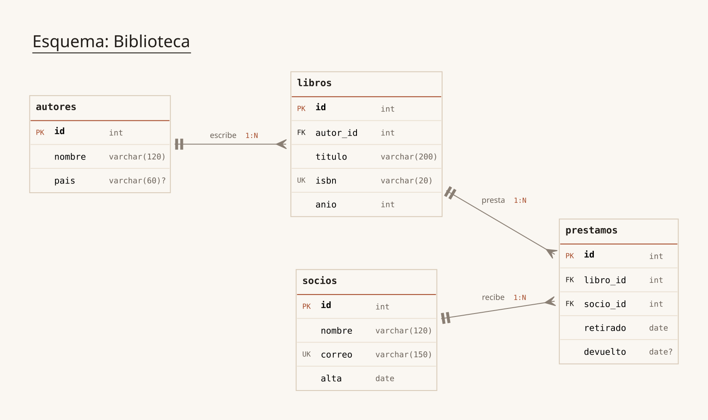
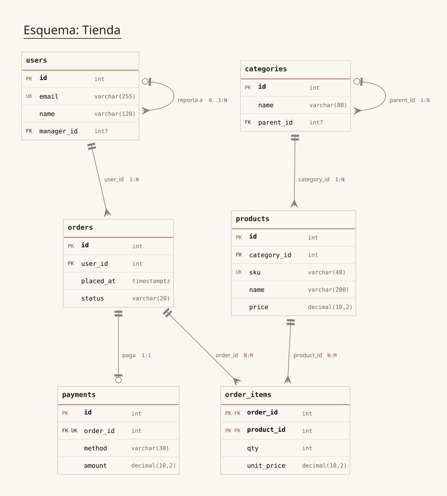

Insignias y tipos
- PK
- Clave primaria. El acento está reservado para esto.
- FK
- Clave foránea; la arista sale de esta columna.
- UK
- Clave única. Si además es FK, la relación es 1:1.
date?- El signo de pregunta marca un campo anulable.
v0.2.0 · MIT · Python 3.10+
diagram-db lee las entidades, los campos y las claves
foráneas de un .spec.md, valida el modelo y dibuja el
diagrama entidad-relación con pata de cuervo. Sin base de datos,
sin ORM, sin servicios externos.
pip install diagram-db

Salida real de --rankdir LR. Las etiquetas
escribe 1:N son el verbo de
## Relaciones y la cardinalidad inferida.
01 — El spec
Cada entidad es un ### y cada campo una lista. Los
modificadores van después del tipo, en el orden que quieras, y las
comas dentro de paréntesis no separan nada:
decimal(10,2) es un solo tipo.
# Esquema: Tienda
## Entidades
### orders
- id: int PK
- user_id: int FK -> users.id, not null
- placed_at: timestamptz, not null
### payments
- id: int PK
- order_id: int UK, FK -> orders.id, not null
## Relaciones
- payments.order_id: 1:1 "paga"## Entidades
es la única sección que se lee. El resto del documento queda
como prosa y no afecta al diagrama.
PK, UK y
FK -> tabla.columna
se combinan en la misma línea; la columna del FK es opcional
si la PK destino es simple.
not null
marca obligatorio. Sin modificador el campo es anulable; la
PK siempre lo es.
## Relaciones
sobrescribe el verbo y la cardinalidad de una arista concreta:
1:N, 1:1, N:M o la forma
explícita 0..1:N.
sales.order
entre comillas invertidas en el encabezado: los nombres
cualificados se respetan tal cual.
02 — El diagrama
Cabecera con el nombre y un filete de acento debajo —rojizo si la entidad no declara PK—, insignias por columna, un filete apenas más oscuro entre filas y la cardinalidad al lado de cada arista.

date?teetee exactamente uno
odottee cero o uno
crow cero o muchos
crowtee uno o muchos
user_id 1:Norder_id N:Mreporta a 0..1:N## Relaciones reemplaza al campo;
la cardinalidad se sigue mostrando.
03 — Playground
El mismo código que instala pip, compilado a WebAssembly
con Pyodide. Valida el spec y te devuelve el DOT que Graphviz
interpretaría, con los mismos diagnósticos que imprime la CLI.
El primer análisis descarga Python (~10 MB) una sola vez.
Sin analizar todavía. Pulsa Analizar spec para validar el modelo y ver el DOT.
fallo del motor
04 — Diagnósticos
Cada problema sale por stderr como
archivo:línea: CÓDIGO mensaje. Los códigos son estables:
se pueden citar en una revisión o comprobar en un script.
| Código | Cuándo aparece |
|---|---|
E000 | Falta ## Entidades |
E001 | Entidad duplicada |
E002 | Campo duplicado en la misma entidad |
E003 | Entidad sin campos |
E004 | FK a una entidad inexistente |
E005 | FK a una columna inexistente |
E006 | FK sin columna y la PK destino no es simple |
E007 | Entidad sin PK |
E008 | Línea no reconocida dentro de ## Entidades |
E009 | Nombre de entidad no válido |
E010 | Nombre de campo no válido |
E011 | Línea de campo sin : |
E012 | Campo sin tipo |
E013 | Modificador no reconocido |
E020 | Línea de ## Relaciones mal formada |
E021 | La relación apunta a una entidad o campo inexistente |
E022 | La relación apunta a un campo que no es FK |
E023 | Cardinalidad no válida |
E024 | Relación duplicada para el mismo FK |
| Código | Aviso |
|---|---|
W001 | FK a una columna que no es PK ni UK |
W002 | Tipo del FK distinto del tipo destino |
W003 | Campo PK declarado como null |
W004 | Entidad sin PK con --allow-no-pk |
Los errores impiden generar el diagrama y devuelven
1; los avisos no. Un spec ilegible devuelve
2.
05 — CLI
--format acepta svg, png,
dot y json, combinables con comas. El DOT
y el JSON salen por stdout; las imágenes, a
-o.
$ diagram-db examples/tienda.spec.md -o salida/
escrito: salida/tienda.svg
$ diagram-db examples/tienda.spec.md --format dot,json > modelo.txt
$ diagram-db examples/tienda.spec.md --check
# valida sin escribir archivos; 0 si el spec está limpio
$ diagram-db malo.spec.md
malo.spec.md:12: E007 la entidad 'pagos' no declara PK-o, --output | Directorio, o archivo .svg/.png si se pide un solo formato |
|---|---|
--format | svg por defecto; png, dot y json |
--rankdir | TB, LR, BT o RL |
--check | Solo valida el spec, sin escribir archivos |
--allow-no-pk | Convierte la falta de PK en aviso |
--quiet | Oculta avisos y mensajes de éxito |
06 — Instalación
dot.
Graphviz se instala por separado: el paquete de Python lo invoca
para rasterizar. Sin él, --format dot y
--format json siguen funcionando.
El comando queda en el entorno donde instales:
pip install diagram-db
¿Lo quieres aislado del resto? pipx install diagram-db
El binario lo pone el sistema, no pip:
sudo dnf install graphviz
sudo apt install graphviz
En macOS: brew install graphviz.
Para trabajar sobre el código, con el entorno virtual del repo:
git clone https://github.com/jeironpro/python-packages.git
cd python-packages/packages/diagram-db
python3 -m venv .venv
.venv/bin/pip install -r requirements.txt
.venv/bin/pip install -e .
Los tests y el lint: pytest y
ruff check .
07 — Preguntas
No. El spec es la fuente de verdad: el diagrama se dibuja desde el markdown. Puedes escribirlo a mano o generarlo desde tu esquema real con el script que prefieras.
Hasta donde aguanta Graphviz. Con muchas entidades conviene
--rankdir LR y, si el lienzo se ensancha demasiado,
separar el modelo en varios specs. El layout lo decide
dot: la herramienta no reordena tablas a mano.
Sí: el SVG es texto, pesa poco y se versiona bien. El fondo es
papel (#FAF7F2), así que se ve igual en pantalla, en
proyección y en impresión.
--format json devuelve entidades, campos,
referencias y aristas con su cardinalidad. --format dot
devuelve el documento Graphviz tal cual, para retocarlo con otras
herramientas.
Sí. parse_spec, validate,
build_relations, to_dot y
render son la API pública, con la misma validación y
los mismos diagnósticos que usa la CLI.
Empezar
pip install diagram-db